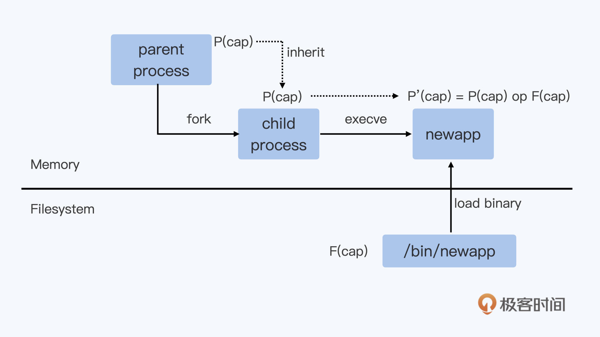

- 00 开篇词 一个态度两个步骤，成为容器实战高手.md.html
- 01 认识容器：容器的基本操作和实现原理.md.html
- 02 理解进程（1）：为什么我在容器中不能kill 1号进程？.md.html
- 03 理解进程（2）：为什么我的容器里有这么多僵尸进程？.md.html
- 04 理解进程（3）：为什么我在容器中的进程被强制杀死了？.md.html
- 05 容器CPU（1）：怎么限制容器的CPU使用？.md.html
- 06 容器CPU（2）：如何正确地拿到容器CPU的开销？.md.html
- 07 Load Average：加了CPU Cgroup限制，为什么我的容器还是很慢？.md.html
- 08 容器内存：我的容器为什么被杀了？.md.html
- 09 Page Cache：为什么我的容器内存使用量总是在临界点.md.html
- 10 Swap：容器可以使用Swap空间吗？.md.html
- 11 容器文件系统：我在容器中读写文件怎么变慢了？.md.html
- 12 容器文件Quota：容器为什么把宿主机的磁盘写满了？.md.html
- 13 容器磁盘限速：我的容器里磁盘读写为什么不稳定_.md.html
- 14 容器中的内存与IO：容器写文件的延时为什么波动很大？.md.html
- 15 容器网络：我修改了_proc_sys_net下的参数，为什么在容器中不起效？.md.html
- 16 容器网络配置（1）：容器网络不通了要怎么调试.md.html
- 17 容器网络配置（2）：容器网络延时要比宿主机上的高吗.md.html
- 18 容器网络配置（3）：容器中的网络乱序包怎么这么高？.md.html
- 19 容器安全（1）：我的容器真的需要privileged权限吗.md.html
- 20 容器安全（2）：在容器中，我不以root用户来运行程序可以吗？.md.html
- 加餐01 案例分析：怎么解决海量IPVS规则带来的网络延时抖动问题？.md.html
- 加餐02 理解perf：怎么用perf聚焦热点函数？.md.html
- 加餐03 理解ftrace（1）：怎么应用ftrace查看长延时内核函数？.md.html
- 加餐04 理解ftrace（2）：怎么理解ftrace背后的技术tracepoint和kprobe？.md.html
- 加餐05 eBPF：怎么更加深入地查看内核中的函数？.md.html
- 加餐06 BCC：入门eBPF的前端工具.md.html
- 结束语 跳出舒适区，突破思考的惰性.md.html
- 捐赠
19 容器安全（1）：我的容器真的需要privileged权限吗
你好，我是程远。从今天这一讲，我们进入到了容器安全的模块。
容器安全是一个很大的话题，容器的安全性很大程度是由容器的架构特性所决定的。比如容器与宿主机共享Linux内核，通过Namespace来做资源的隔离，通过shim/runC的方式来启动等等。
这些容器架构特性，在你选择使用容器之后，作为使用容器的用户，其实你已经没有多少能力去对架构这个层面做安全上的改动了。你可能会说用Kata Container、gVisor 就是安全“容器”了。不过，Kata或者gVisor只是兼容了容器接口标准，而内部的实现完全是另外的技术了。
那么对于使用容器的用户，在运行容器的时候，在安全方面可以做些什么呢？我们主要可以从这两个方面来考虑：第一是赋予容器合理的capabilities，第二是在容器中以非root用户来运行程序。
为什么是这两点呢？我通过两讲的内容和你讨论一下，这一讲我们先来看容器的capabilities的问题。
问题再现
刚刚使用容器的同学，往往会发现用缺省 docker run的方式启动容器后，在容器里很多操作都是不允许的，即使是以root用户来运行程序也不行。
我们用下面的例子来重现一下这个问题。我们先运行make image 做个容器镜像，然后运行下面的脚本：
# docker run --name iptables -it registry/iptables:v1 bash
[root@0b88d6486149 /]# iptables -L
iptables v1.8.4 (nf_tables): Could not fetch rule set generation id: Permission denied (you must be root)
[root@0b88d6486149 /]# id
uid=0(root) gid=0(root) groups=0(root)
在这里，我们想在容器中运行 iptables 这个命令，来查看一下防火墙的规则，但是执行命令之后，你会发现结果输出中给出了”Permission denied (you must be root)“的错误提示，这个提示要求我们用root用户来运行。
不过在容器中，我们现在已经是以root用户来运行了，么为什么还是不可以运行”iptables”这条命令呢？
你肯定会想到，是不是容器中又做了别的权限限制？如果你去查一下资料，就会看到启动容器有一个”privileged”的参数。我们可以试一下用上这个参数，没错，我们用了这个参数之后，iptables这个命令就执行成功了。
# docker stop iptables;docker rm iptables
iptables
iptables
# docker run --name iptables --privileged -it registry/iptables:v1 bash
[root@44168f4b9b24 /]# iptables -L
Chain INPUT (policy ACCEPT)
target prot opt source destination
Chain FORWARD (policy ACCEPT)
target prot opt source destination
Chain OUTPUT (policy ACCEPT)
target prot opt source destination
看上去，我们用了一个配置参数就已经解决了问题，似乎很容易。不过这里我们可以进一步想想，用”privileged”参数来解决问题，是不是一个合理的方法呢？用它会有什么问题吗？
要回答这些问题，我们先来了解一下”privileged”是什么意思。从Docker的代码里，我们可以看到，如果配置了privileged的参数的话，就会获取所有的capabilities，那什么是capabilities呢？
if ec.Privileged {
p.Capabilities = caps.GetAllCapabilities()
}
基本概念
Linux capabilities
要了解Linux capabilities的定义，我们可以先查看一下”Linux Programmer’s Manual”中关于Linux capabilities的描述。
在Linux capabilities出现前，进程的权限可以简单分为两类，第一类是特权用户的进程（进程的有效用户ID是0，简单来说，你可以认为它就是root用户的进程），第二类是非特权用户的进程（进程的有效用户ID是非0，可以理解为非root用户进程）。
特权用户进程可以执行Linux系统上的所有操作，而非特权用户在执行某些操作的时候就会被内核限制执行。其实这个概念，也是我们通常对Linux中root用户与非root用户的理解。
从kernel 2.2开始，Linux把特权用户所有的这些“特权”做了更详细的划分，这样被划分出来的每个单元就被称为capability。
所有的capabilities都在Linux capabilities的手册列出来了，你也可以在内核的文件capability.h中看到所有capabilities的定义。
对于任意一个进程，在做任意一个特权操作的时候，都需要有这个特权操作对应的capability。
比如说，运行iptables命令，对应的进程需要有CAP_NET_ADMIN这个capability。如果要mount一个文件系统，那么对应的进程需要有CAP_SYS_ADMIN这个capability。
我还要提醒你的是，CAP_SYS_ADMIN这个capability里允许了大量的特权操作，包括文件系统，交换空间，还有对各种设备的操作，以及系统调试相关的调用等等。
在普通Linux节点上，非root用户启动的进程缺省没有任何Linux capabilities，而root用户启动的进程缺省包含了所有的Linux capabilities。
我们可以做个试验，对于root用户启动的进程，如果把CAP_NET_ADMIN这个capability移除，看看它是否还可以运行iptables。
在这里我们要用到capsh这个工具，对这个工具不熟悉的同学可以查看超链接。接下来，我们就用capsh执行下面的这个命令：
# sudo /usr/sbin/capsh --keep=1 --user=root --drop=cap_net_admin -- -c './iptables -L;sleep 100'
Chain INPUT (policy ACCEPT)
target prot opt source destination
Chain FORWARD (policy ACCEPT)
target prot opt source destination
Chain OUTPUT (policy ACCEPT)
target prot opt source destination
iptables: Permission denied (you must be root).
这时候，我们可以看到即使是root用户，如果把”CAP_NET_ADMIN”给移除了，那么在执行iptables的时候就会看到”Permission denied (you must be root).“的提示信息。
同时，我们可以通过/proc文件系统找到对应进程的status，这样就能确认进程中的CAP_NET_ADMIN是否已经被移除了。
# ps -ef | grep sleep
root 22603 22275 0 19:44 pts/1 00:00:00 sudo /usr/sbin/capsh --keep=1 --user=root --drop=cap_net_admin -- -c ./iptables -L;sleep 100
root 22604 22603 0 19:44 pts/1 00:00:00 /bin/bash -c ./iptables -L;sleep 100
# cat /proc/22604/status | grep Cap
CapInh: 0000000000000000
CapPrm: 0000003fffffefff
CapEff: 0000003fffffefff
CapBnd: 0000003fffffefff
CapAmb: 0000000000000000
运行上面的命令查看 /proc//status里Linux capabilities的相关参数之后，我们可以发现，输出结果中包含5个Cap参数。
这里我给你解释一下， 对于当前进程，直接影响某个特权操作是否可以被执行的参数，是”CapEff”，也就是”Effective capability sets”，这是一个bitmap，每一个bit代表一项capability是否被打开。
在Linux内核capability.h里把CAP_NET_ADMIN的值定义成12，所以我们可以看到”CapEff”的值是”0000003fffffefff”，第4个数值是16进制的”e”，而不是f。
这表示CAP_NET_ADMIN对应的第12-bit没有被置位了（0xefff = 0xffff & (~(1 << 12))），所以这个进程也就没有执行iptables命令的权限了。
对于进程status中其他几个capabilities相关的参数，它们还需要和应用程序文件属性中的capabilities协同工作，这样才能得到新启动的进程最终的capabilities参数的值。
我们看下面的图，结合这张图看后面的讲解：

如果我们要新启动一个程序，在Linux里的过程就是先通过fork()来创建出一个子进程，然后调用execve()系统调用读取文件系统里的程序文件，把程序文件加载到进程的代码段中开始运行。
就像图片所描绘的那样，这个新运行的进程里的相关capabilities参数的值，是由它的父进程以及程序文件中的capabilities参数值计算得来的。
具体的计算过程你可以看Linux capabilities的手册中的描述，也可以读一下网上的这两篇文章：
我就不对所有的进程和文件的capabilities集合参数和算法挨个做解释了，感兴趣的话你可以自己详细去看看。
这里你只要记住最重要的一点，文件中可以设置capabilities参数值，并且这个值会影响到最后运行它的进程。比如，我们如果把iptables的应用程序加上 CAP_NET_ADMIN的capability，那么即使是非root用户也有执行iptables的权限了。
$ id
uid=1000(centos) gid=1000(centos) groups=1000(centos),10(wheel)
$ sudo setcap cap_net_admin+ep ./iptables
$ getcap ./iptables
./iptables = cap_net_admin+ep
$./iptables -L
Chain INPUT (policy ACCEPT)
target prot opt source destination
Chain FORWARD (policy ACCEPT)
target prot opt source destination
DOCKER-USER all -- anywhere anywhere
DOCKER-ISOLATION-STAGE-1 all -- anywhere anywhere
ACCEPT all -- anywhere anywhere ctstate RELATED,ESTABLISHED
DOCKER all -- anywhere anywhere
ACCEPT all -- anywhere anywhere
ACCEPT all -- anywhere anywhere
…
好了，关于Linux capabilities的内容到这里我们就讲完了，其实它就是把Linux root用户原来所有的特权做了细化，可以更加细粒度地给进程赋予不同权限。
解决问题
我们搞懂了Linux capabilities之后，那么对privileged的容器也很容易理解了。Privileged的容器也就是允许容器中的进程可以执行所有的特权操作。
因为安全方面的考虑，容器缺省启动的时候，哪怕是容器中root用户的进程，系统也只允许了15个capabilities。这个你可以查看runC spec文档中的security 部分，你也可以查看容器init进程status里的Cap参数，看一下容器中缺省的capabilities。
# docker run --name iptables -it registry/iptables:v1 bash
[root@e54694652a42 /]# cat /proc/1/status |grep Cap
CapInh: 00000000a80425fb
CapPrm: 00000000a80425fb
CapEff: 00000000a80425fb
CapBnd: 00000000a80425fb
CapAmb: 0000000000000000
我想提醒你，当我们发现容器中运行某个程序的权限不够的时候，并不能“偷懒”把容器设置为”privileged”，也就是把所有的capabilities都赋予了容器。
因为容器中的权限越高，对系统安全的威胁显然也是越大的。比如说，如果容器中的进程有了CAP_SYS_ADMIN的特权之后，那么这些进程就可以在容器里直接访问磁盘设备，直接可以读取或者修改宿主机上的所有文件了。
所以，在容器平台上是基本不允许把容器直接设置为”privileged”的，我们需要根据容器中进程需要的最少特权来赋予capabilities。
我们结合这一讲开始的例子来说说。在开头的例子中，容器里需要使用iptables。因为使用iptables命令，只需要设置CAP_NET_ADMIN这个capability就行。那么我们只要在运行Docker的时候，给这个容器再多加一个NET_ADMIN参数就可以了。
# docker run --name iptables --cap-add NET_ADMIN -it registry/iptables:v1 bash
[root@cfedf124dcf1 /]# iptables -L
Chain INPUT (policy ACCEPT)
target prot opt source destination
Chain FORWARD (policy ACCEPT)
target prot opt source destination
Chain OUTPUT (policy ACCEPT)
target prot opt source destination
重点小结
这一讲我们主要学习了如何给容器赋予合理的capabilities。
那么，我们自然需要先来理解什么是Linux capabilities。其实Linux capabilities就是把Linux root用户原来所有的特权做了细化，可以更加细粒度地给进程赋予不同权限。
对于Linux中的每一个特权操作都有一个对应的capability，对于一个capability，有的对应一个特权操作，有的可以对应很多个特权操作。
每个Linux进程有5个capabilities集合参数，其中Effective集合里的capabilities决定了当前进程可以做哪些特权操作，而其他集合参数会和应用程序文件的capabilities集合参数一起来决定新启动程序的capabilities集合参数。
对于容器的root用户，缺省只赋予了15个capabilities。如果我们发现容器中进程的权限不够，就需要分析它需要的最小capabilities集合，而不是直接赋予容器”privileged”。
因为”privileged”包含了所有的Linux capabilities, 这样”privileged”就可以轻易获取宿主机上的所有资源，这会对宿主机的安全产生威胁。所以，我们要根据容器中进程需要的最少特权来赋予capabilities。
思考题
你可以查看一下你的Linux系统里ping程序文件有哪些capabilities，看看有什么办法，能让Linux普通用户没有执行ping的能力。
欢迎你在留言区和我交流互动。如果学完这一讲让你有所收获，也欢迎转发给你的同事、或者朋友，一起交流探讨容器安全的问题。
© 2019 - 2023 Liangliang Lee. Powered by gin and hexo-theme-book.